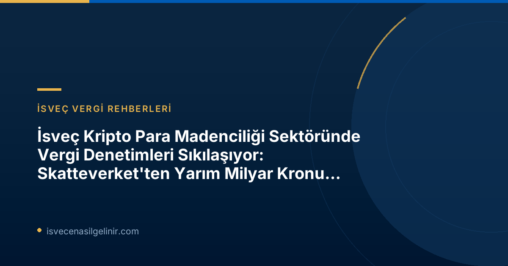

Skatteverket'ten Kripto Madenciliği Sektörüne Yönelik Kapsamlı Denetimler
İsveç Vergi Dairesi Skatteverket, kripto para madenciliği sektöründeki vergi kaçakçılığı ve usulsüzlüklerle mücadelesini kararlılıkla sürdürüyor. Sektördeki sorunların devam ettiğini gösteren yeni bir basın duyurusuyla Skatteverket, denetimlerini daha da derinleştirdiğini ortaya koydu. Bu denetimler, özellikle karmaşık yapıdaki madencilik operasyonlarını hedef alıyor ve vergi sistemine yönelik potansiyel saldırıları engellemeyi amaçlıyor.
2024-2026 Dönemi Bulguları: Yarım Milyar Kronu Aşan Ek Tahakkuklar
Skatteverket'in 2024-2026 yılları arasında gerçekleştirdiği son denetimlerde, kripto para madenciliği faaliyetleri yürüten dokuz şirkette ciddi usulsüzlükler ve yanlış beyanlar tespit edildi. Bu kontroller sonucunda ilgili şirketlere toplamda 529 milyon İsveç Kronu (SEK) tutarında ek vergi tahakkuku yapıldı. Bu miktarın önemli bir kısmı KDV düzeltmelerinden oluşuyor.
2024-2026 Kripto Madenciliği Denetim Sonuçları
- Denetlenen Şirket Sayısı: 9
- Toplam Ek Vergi Tahakkuku: 529 Milyon SEK
- Vergi Cezaları: 57 Milyon SEK
- KDV Düzeltmeleri: 471 Milyon SEK
Önceki Denetimlerle Karşılaştırma (2020-2023)
Skatteverket'in kripto madenciliği sektörüne yönelik denetimleri yeni değil. 2020-2023 döneminde yapılan önceki kontrollerde de benzer sorunlar görülmüş ve 18 şirkete toplamda yaklaşık 1 milyar SEK tutarında ek vergi tahakkuku yapılmıştı. Bu, sektördeki vergi uyumsuzluğunun süregelen ve sistemsel bir sorun olduğunu açıkça göstermektedir.
Vergi Kaçakçılığı Yöntemleri ve Arkasındaki Motivasyonlar
Skatteverket'in İstihbarat Şefi Patrik Lillqvist'in açıklamalarına göre, denetlenen şirketler genellikle madencilik faaliyetlerini gizlemek için özel yapılar kullanıyor. Temel amaç, aslında hak sahibi olmadıkları vergi avantajlarını haksız yere elde etmektir. Bu durum, Skatteverket'in soruşturmaları için önemli karmaşıklıklar yaratmaktadır.
İşletmeler Nasıl Vergi Avantajı Elde Etmeye Çalışıyor?
Madencilik ekipmanlarını kimin kullandığını ve bilgisayar veri merkezlerinde tam olarak ne tür bir faaliyet yürütüldüğünü tespit etmedeki zorluklar, soruşturmaları zorlaştıran temel faktörler arasında yer alıyor. Lillqvist, "Ciddi olmayan aktörlerin faaliyetlerini yanlış sınıflandırmak için açık teşvikler bulunmaktadır" diyerek, vergi yükümlülüklerinden kaçınma girişimlerinin ardındaki temel motivasyonu vurgulamıştır.
KDV Karmaşası: Madencilik Faaliyetlerinin Sınıflandırılması
KDV perspektifinden bakıldığında, kripto para madenciliği faaliyetlerinin sınıflandırılması merkezî bir sorundur. Kripto para madenciliği, birçok durumda KDV'nin uygulama alanı dışında kalmaktadır çünkü işlemde net bir karşı taraf bulunmadığından giriş KDV'si indirilememektedir. Ancak, bazı aktörler, faaliyetlerini KDV'ye tabi olarak tanımlayarak, örneğin bilişim gücü veya diğer KDV'ye tabi hizmetleri sunduğunu iddia ederek, madencilik faaliyetlerini gizlemeye çalışmaktadır.
İsveç'teki yasal yükümlülüklerinizi doğru anlamak ve vergi mevzuatına uyum sağlamak, özellikle yeni ve karmaşık alanlarda faaliyet gösteren işletmeler için hayati öneme sahiptir. Benzer şekilde, İsveç vatandaşlığı süreçleri ve gereklilikleri hakkında detaylı bilgi edinmek isteyenler için İsveç Vatandaşlık Sınavı rehberleri büyük bir kaynak sunmaktadır.
Vergi Kayıpları ve Kara Para Aklama Riskleri
Patrik Lillqvist, bu tür gizleme faaliyetlerinin ülke için ciddi sonuçları olduğunu belirtiyor. Yanlış ödemeler, ödenmeyen çıkış KDV'si ve beyan edilmeyen kripto varlıklar aracılığıyla vergi gelirleri ülke dışına akabilmektedir. Vergi kaybının yanı sıra, madencilik veri merkezlerinin kara para aklama yasaları kapsamına girmemesi de ek riskler oluşturmaktadır. Bu durum, gayrimeşru faaliyetler için bir açık kapı bırakabilmektedir.
Skatteverket'in Mesajı ve Sektöre Yönelik Uyarılar
Skatteverket, vergi sistemine yönelik saldırılara karşı koymak amacıyla, kripto madenciliği veri merkezlerinin denetimlerini aralıksız sürdüreceğini açıkça belirtiyor. Kurum, sektördeki tüm aktörlere yasalara ve düzenlemelere tam uyum sağlama çağrısı yapıyor. Şeffaflık ve doğru beyan, hem şirketlerin kendileri hem de İsveç ekonomisi için uzun vadede en sağlıklı yaklaşımdır.
Kripto Madenciliği Şirketleri İçin Önemli Notlar ve Yasal Danışmanlık
İsveç'te kripto para madenciliği yapan veya yapmayı düşünen şirketlerin aşağıdaki noktalara özellikle dikkat etmesi gerekmektedir:
- Doğru Sınıflandırma: Faaliyetlerinizi vergi mevzuatına uygun bir şekilde doğru sınıflandırdığınızdan emin olun. Özellikle KDV yükümlülükleri konusunda netlik sağlayın.
- Şeffaflık: Tüm gelirlerinizi ve giderlerinizi eksiksiz ve şeffaf bir şekilde beyan edin. Gizli yapılar veya yanıltıcı bilgilerden kaçının.
- Profesyonel Destek: Kripto para ve vergi mevzuatı sürekli değiştiği için, uzman bir vergi danışmanından düzenli olarak hukuki ve mali destek almanız hayati önem taşır.
- Uyum: Kara para aklama (AML) düzenlemeleri gibi ilgili diğer yasalara uyum konusunda dikkatli olun, çünkü madencilik veri merkezleri şu anda AML yasaları kapsamında değildir ve bu durum gelecekte değişebilir.
Skatteverket'in denetimlerinin devam edeceği ve usulsüzlüklere karşı tolerans göstermeyeceği göz önüne alındığında, proaktif bir yaklaşımla yasalara tam uyum sağlamak, şirketler için olası cezai yaptırımlardan ve itibar kaybından kaçınmanın en iyi yoludur.
Referanslar:
- İsveç Vatandaşlık Sınavı
- Skatteverkets pressmeddelande – Fortsatt stora upptaxeringar inom miningsektorn (2026-06-22)
İsveç'te Kripto Para Madenciliği Yapıyor musunuz?
Vergi yükümlülüklerinizi doğru anlamak ve yasal risklerden kaçınmak için uzman danışmanlık hizmeti alın. Skatteverket'in denetimlerinden olumsuz etkilenmemek adına profesyonel destekle hareket edin.